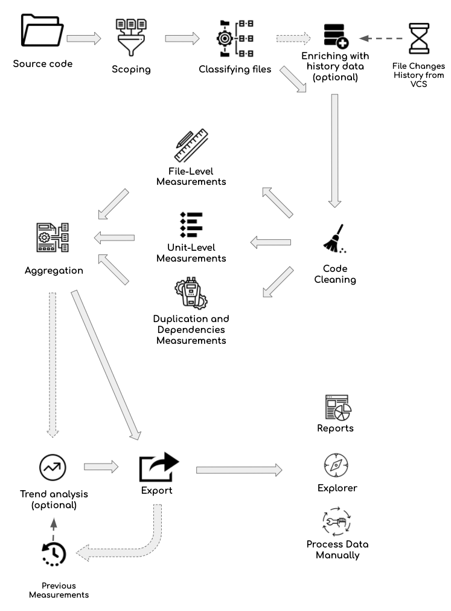

Sokrates Analysis Overview
“Sir Francis Bacon told a story, perhaps apocryphal, that illustrated just how empiricism was lost during the Middle Ages. The story was that a meeting of monks was taking place and the monks were hotly debating the issue of how many teeth were in the mouth of a horse. The problem was that they could not find the answer anywhere in Aristotle’s work. Then, a young monk, perhaps at his first such meeting, timidly suggested that, because they had all come to the meeting on horseback, that one way to get the answer would be simply to go outside and count. Bacon went on to say that the young monk was expelled from the meeting!”
In my career as a developer, architect, and analyst, I was frequently thinking about the anecdote from Sir Francis Bacon. Many discussions on software engineering are opinion-driven; while often answers are there in source code or other data, just someone has to look at the facts. And frequently, you only need to count things, without sophisticated statistical or machine-learning processing.
Sokrates aims at helping you reliably and efficiently get the basic data about your source code. Sokrates analyses are not extremely complex. In essence, Sokrates splits your code in small-block and counts and aggregates and connects constructs found in the code. In this section, I present the overview of Sokrates analysis, and in the follow-up sections, I describe each of these stages in more detail.
Analysis Stages
Sokrates analysis approach consists of the following stages:
- Scoping,
- Classifying files (logical decomposition, and concerns),
- Enriching the file data with history information (optional)
- Code cleaning,
- File-level measurements,
- Unit-level measurements,
- Complex measurements (duplication and dependencies),
- Aggregation of measurements,
- Trend analysis (optional), and
- Export of data to reports, explorers, and data files.

Figure 1: The overview of Sokrates processing. Sokrates processes source code in multiple stages, some of which are optional. The analysis starts with scoping, continuing through an examination of individual files and units, ending with an aggregation of results and export of reports.
Scoping
Firstly Sokrates scopes the project files ignoring irrelevant files and classifying the relevant files into primary and secondary ones.
To learn more:
Classifying Files
To structure analysis, reporting, and explorations, Sokrates creates multiples views on the source code: logical decompositions and concerns. Each view is a list of files, with a name and with potential relations to other views.
To learn more:
Optionally Enriching the File Data with History Information
Optionally, you can import data about file change histories (dates at which developers have updated each file), and associated them with each file.
To learn more:
Code Cleaning
To simplify analyses and improve their reliability Sokrates, remove some pieces of code prior to measurements. Such code cleaning includes removing comments, empty lines, and long string constants.
To learn more:
File-Level Analyses
For each file, Sokrates measurements their size and analyses their change history.
To learn more:
Unit-Level Analyses
Most of Sokrates’ analyses are at the level of a whole file. Sokrates also goes a level deeper, at a so-called unit level. Depending on a language, a unit can be a method, function, or procedure. For each unit, Sokrates measurements their size and conditional complexity.
To learn more:
Advanced Measurements
After getting the basic measurements, Sokrates performs a set of more complex and computationally intensive cross-file analyses to identify dependencies and duplication among files and components.
To learn more:
- Duplication Analysis
- Finding Dependencies based on Text Patterns
- Finding Dependencies through Duplication and Change History
Aggregating Results & Trend Analysis
After Sokrates has all the data at the file level and lists of duplicates and dependencies, it then proceeds with aggregating results. Sokrates aggregates data at the overall project level as well as at the level of components and concerns. For dependencies, duplication, and file change history, Sokrates also identifies links between components. These links show couplings between components, duplication between them, as well as their temporal coupling (the number of days when developers have changed two components simultaneously).
Optionally Sokrates compares the current results with the previous ones to get the trends.
To learn more:
Exporting the Data
With basic and aggregated data ready, Sokrates then
- generates standard reports, providing a templates based story about measured data, enriched with visuals combining basic chart, Graphviz diagrams, SVG images, and few 3D visualizations.
- provides an interactive explorer to browse quickly, search and visualize all the data, and
- store all the data into simple text and JSON files if you want to analyze them further using your tools.
To learn more: